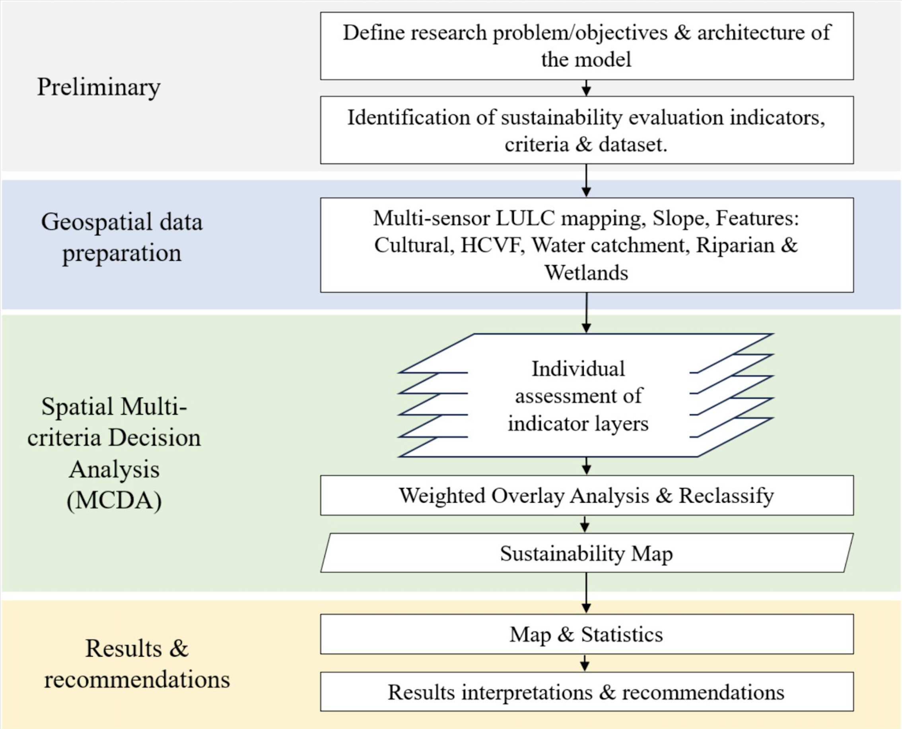
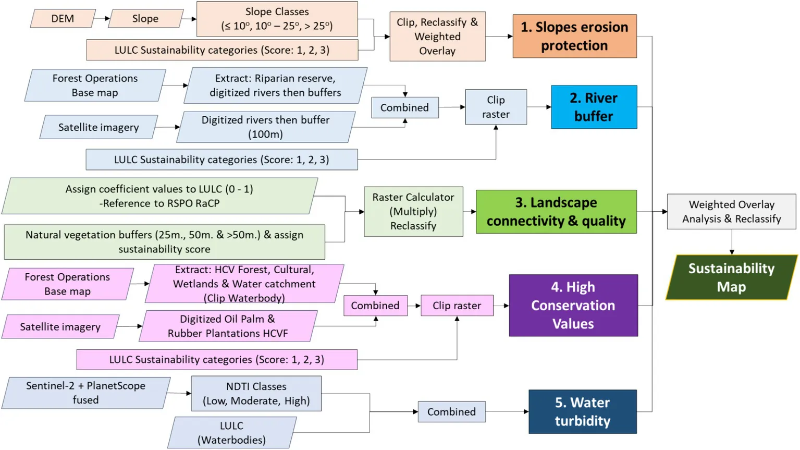
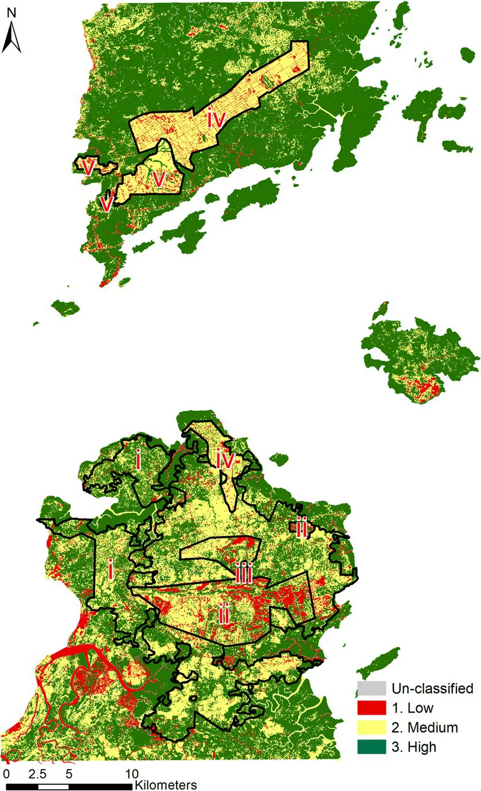

Real-world spatial problems rarely contain a single variable. To solve complex geographical challenges, we rely on Multicriteria Analysis (MCA)—a structured decision-making framework used in GIS to examine, organize, and combine several conflicting factors into accurate spatial solutions. By stacking layers of variables and organizing them by importance, MCA allows us to systematically analyze and determine the absolute best solutions for complex spatial issues.
MCA is incredibly valuable in GIS because it allows analysts to combine several factors and diverse data sources into a single visual field. This synthesis makes geographical decision-making much more calculated, transparent, and accurate. Ultimately, it reduces the risk of human bias since we do not have to guess which environmental or infrastructural factors are more important. Instead, we assign mathematically weighted values to each criterion based on targeted objectives.
This method can help answer a wide variety of spatial questions. It is most often used to answer spatial optimization questions, such as determining where to build new residential developments safely, identifying critical zones for protecting wildlife habitats, or finding the best locations for construction of flood barriers.

This study focused on the Malaysian Borneo in Northern Sabah and addressed the need for thorough sustainability assessments for tropical forests and plantations that are highly fragmented. The primary focus of this study is on the sustainability of all of the different land cover areas in the study location.
Researchers decided to look at 5 sustainability indicator layers:
They also used LULC mapping to classify the land into 3 sustainability levels depending on the LULC layers, as seen in the table below:
| Sustainability Categories (Scores) | LULC Layers | Descriptions |
|---|---|---|
| 1. Low | Infrastructure, Soil/Clearcut and Aquaculture | Activities involved removing/clearing natural vegetation and cutting slopes. |
| 2. Medium | Secondary forest, Rubber, Acacia, Eucalyptus Pellita, Oil palm | Non-natural vegetation, including regeneration of secondary forest replacing original vegetations. |
| 3. High | Waterbody, Nipah, Forest, Mangrove and Beach Sand | Natural permanent vegetations. |
| No scores/Excluded | Cloud and Shadow | — |

The method is quite complicated as we can see from the graphic. Essentially, to create the LULC, researchers fused Sentinel-2 and PlanetScope satellite imagery with Sentinel-1 radar data in the Google Earth Engine (GEE) platform. They classified 14 different land-use types with a machine-learning algorithm. Then they generated maps for the 5 indicators by using a DEM and spatial proximity tools, which they then standardized into matching rank layers. Lastly, to create one comprehensive map they combined all layers using a Spatial Weighted Overlay Analysis.
Sustainability ranking of the area:

Ultimately, they were able to find out the sustainability levels from combining many data sources and GIS techniques. They would not have been able to create such a comprehensive map with so much detail without MCA.